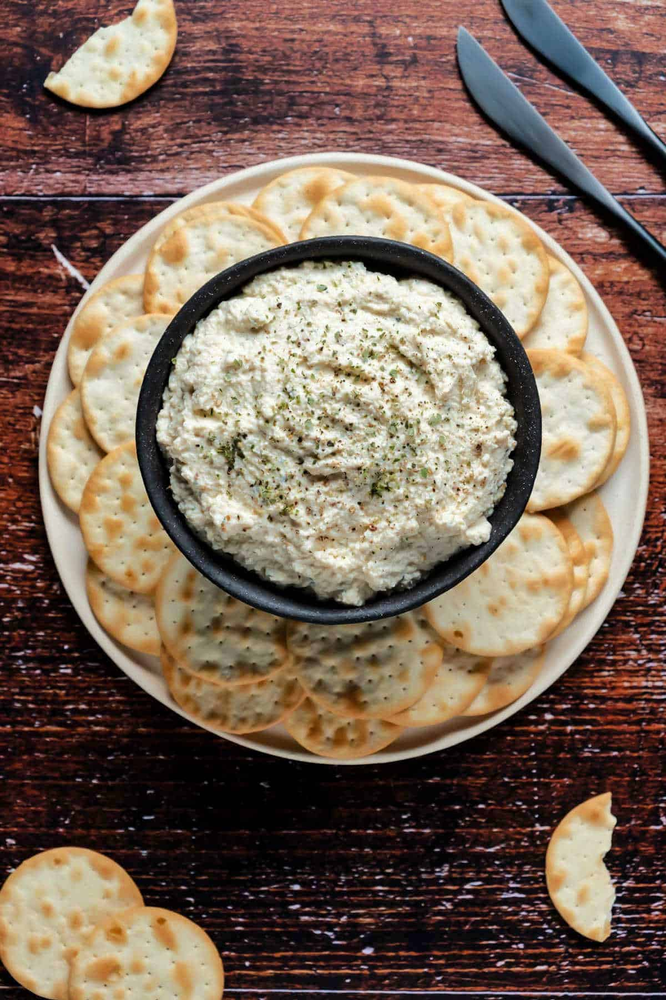

Tofu Ricotta

Description
This tofu ricotta is so easy to make and tastes amazingly close to the real thing. It’s perfect spread on crackers, baked into a lasagna, or as a filling for stuffed shells or cannelloni.
Ingredients
- 1 Clove garlic
- 2 tbsp Lemon juice
- 14 oz Firm tofu
- 1 tbsp Olive oil
- 2 tbsp Nutritional yeast flakes
- 1 tsp Dried oregano
- 1 tsp Onion powder
- 1/2 tsp Sea salt
- 1/4 tsp Ground black pepper
Steps
- Add the crushed garlic to a bowl with fresh lemon juice and let it soak for 5 minutes.
- Add the tofu to a bowl and mash it with a fork.
- Add mashed tofu, garlic and lemon juice, olive oil, nutritional yeast, oregano, onion powder, sea salt and black pepper to the food processor. Pulse it until the ingredients are well combined but the texture is still chunky.
- Serve topped with ground black pepper and a sprinkle of oregano with crackers or crusty bread.